A second-generation driver, mechanic, and fabricator. From Texas short tracks to NASCAR’s national stage, Bayley’s racing résumé includes more than 150 wins and 18 championships.
Behind the wheelNo. 5 Toyota Tundra TRD Pro
Behind the buildNo. 1 TRICON Truck Chief
Away from the track, it’s life with Lexie, their dogs Fat Pat and Jetson, and the Wheelmen of Genius racing podcast.
MOORESVILLE, N.C. (September 10, 2026) – TRICON Garage (TRICON) is pleased to announce that veteran NASCAR Truck Series competitor Bayley Currey has been tabbed to drive the No. 5 Toyota Tundra TRD Pro at Bristol Motor Speedway and Charlotte Motor Speedway.
In a career defined by outperforming his equipment, the 29-year-old has over 200 starts across NASCAR’s top three divisions, culminating in a career-best, fourth-place finish in the NASCAR Truck Series (NCTS) at Atlanta Motor Speedway in both 2023 and 2025.
This opportunity marks Currey’s return to NASCAR competition in the driver’s seat for the first time since 2025, when he recorded two top-tens during a partial NCTS campaign. Currey has since shifted to full-time truck chiefing duties, joining TRICON during the 2026 offseason. The Driftwood, TX native has been an instrumental force, helping guide the No. 1 team to two wins, providing valuable experience and insight both behind the wheel and under the hood.
“Bayley’s been a key addition to our team, and we’re so excited to see him get an opportunity that he’s long deserved. He’s been putting in the work using all of the TRD tools to perform at the highest level. He may be our competitor at Bristol, but we’re still certainly going to be cheering him on.”
Joining Currey at Bristol Motor Speedway is Monster Truck Wars most popular Monster Truck, Shark Attack, a four-time and current National Champion. Shark Attack is a worldwide draw at every event. Currey’s No. 5 Tundra TRD Pro will be a fan-favorite with the Shark Attack livery.
“I feel like this is the best opportunity I have had in my career, and I’m excited to show everyone what I’m capable of. After being part of the team and seeing all the work that goes into these trucks, I know it will be worth having to wait. Obviously a huge thank you to Monster Truck Wars, TRICON and TRD for the opportunity.”
The UNOH 250 Presented by Ohio Logistics at Bristol Motor Speedway will be televised live on FOX Sports 1 on Thursday, September 17 at 8:00 p.m. ET, with radio coverage provided by SiriusXM and the NASCAR Racing Network.
Pre-orders for the No. 5 Monster Truck Wars Toyota Tundra TRD Pro are available on lionelracing.com.
Future partners will be unveiled for Charlotte Motor Speedway at a later date.
2026 Schedule
Two Events / No. 5 TRICON
Sept 17 — Thursday
Bristol Motor Speedway
UNOH 250 Presented by Ohio Logistics
TV — FOX Sports 1, 8:00 p.m. ET
Radio — SiriusXM / NASCAR Racing Network
Livery — Shark Attack, Monster Truck Wars
Date TBA
Charlotte Motor Speedway
NASCAR Craftsman Truck Series
Future partners to be unveiled at a later date
Career Highlights
2026TRICON Truck Chief
Two wins with the No. 1
As Truck Chief for TRICON Garage’s No. 1 Toyota Tundra TRD Pro, Bayley helped deliver victories at Rockingham and Michigan while the team advanced to the Owner’s Championship Chase.
2 Wins238 Laps led9 Top tens
2025Stage winner
Led the field at Bristol
Captured his first career stage win at one of NASCAR’s toughest short tracks.
2023Career-best finish
31st to fourth at Atlanta
Charged through the field for a career-best finish, then returned to Atlanta and finished fourth again in 2025.
2021Breakthrough run
Seventh at Phoenix
Delivered an underdog team a massive seventh-place finish in the O’Reilly Auto Parts Series.
4 typesTrack versatility
Speed everywhere
Top tens on a short track, superspeedway, intermediate oval, and flat oval.
2017Truck Series
Top ten in start No. 2
Finished inside the top ten at Phoenix in the same season he made his NASCAR debut at Martinsville.
83 Truck Series starts111 O’Reilly Auto Parts Series starts12 Cup Series starts
01 / Texas roots
2009–2011
The Texas foundation
Three state championships in Legends cars, with top-three national points finishes in all three seasons.
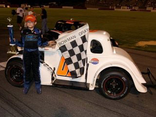
2012–2013
Moving up to modifieds
A first full-size race car. A Central Texas Speedway points championship.
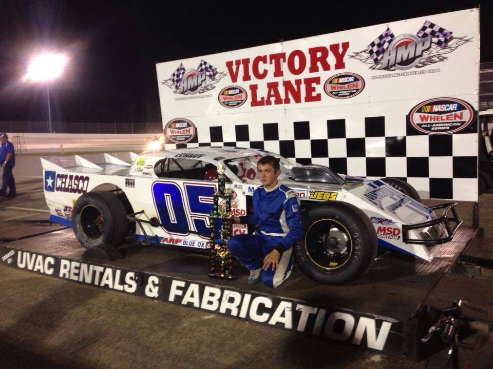
2014–2017
Championship years
A Viper Series title at South Alabama Speedway and two late-model points championships at Central Texas Speedway.
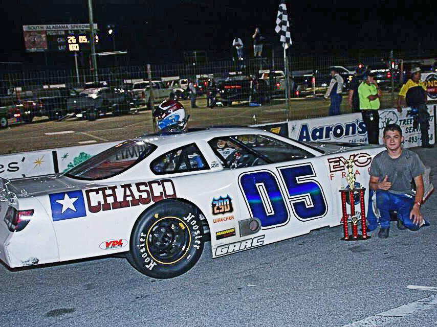
02 / National stage
2017
The NASCAR debut
First national-series start at Martinsville. First Truck Series top ten at Phoenix.
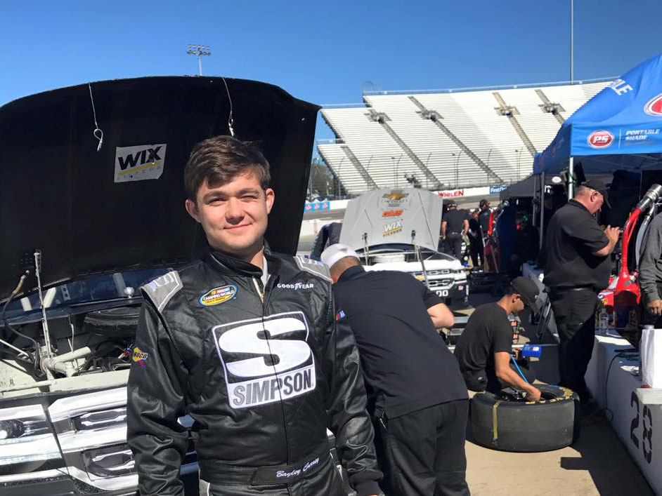
2018
A new national stage
A series debut at Texas Motor Speedway, building experience across two NASCAR divisions.
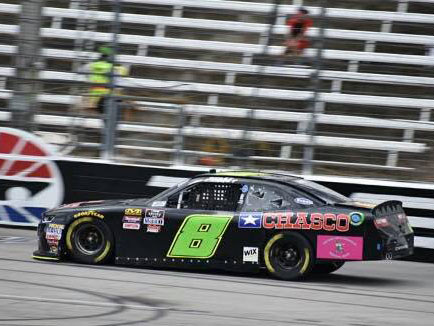
2019
Reaching the Cup Series
A Cup Series debut in March and a sixth-place Truck Series finish at Michigan.
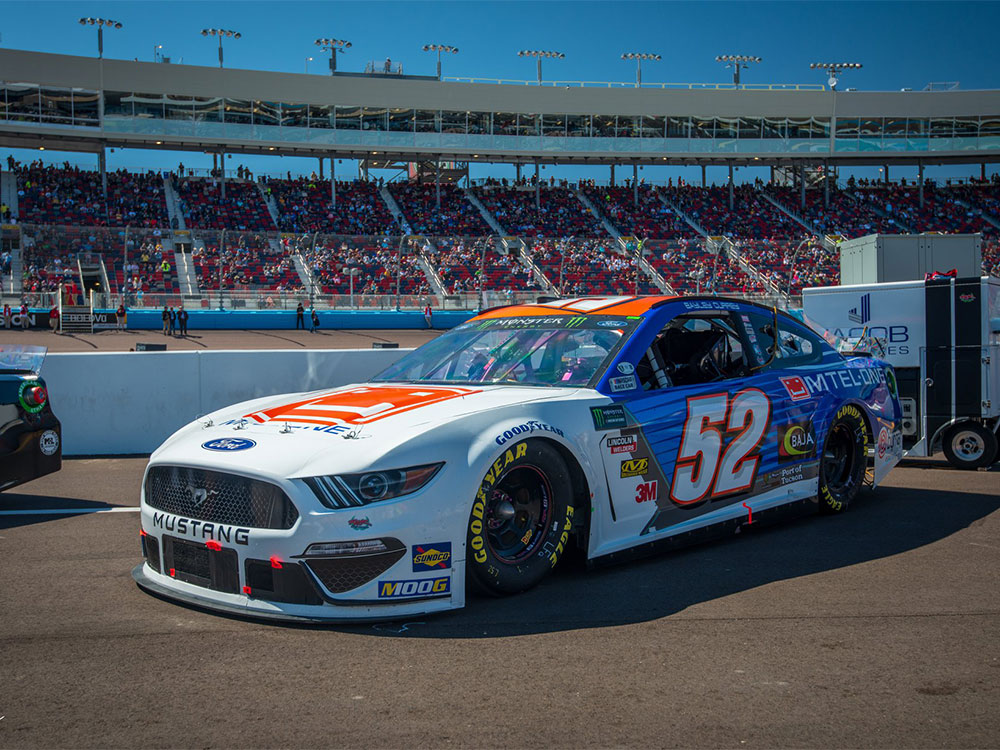
2021
Finding a home
Seventh at Phoenix for a first series top ten, and the beginning of a chapter with Johnny Davis Motorsports.
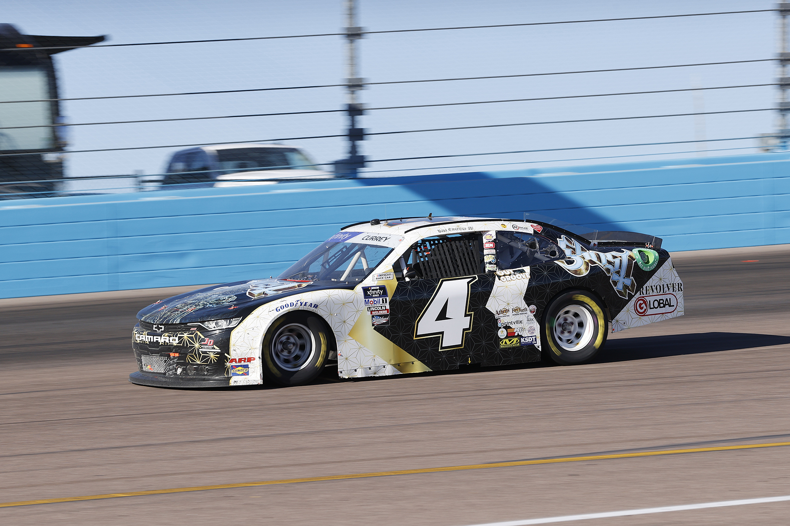
2022
A full-season commitment
A first full-season contract and the opportunity to take on the entire schedule.
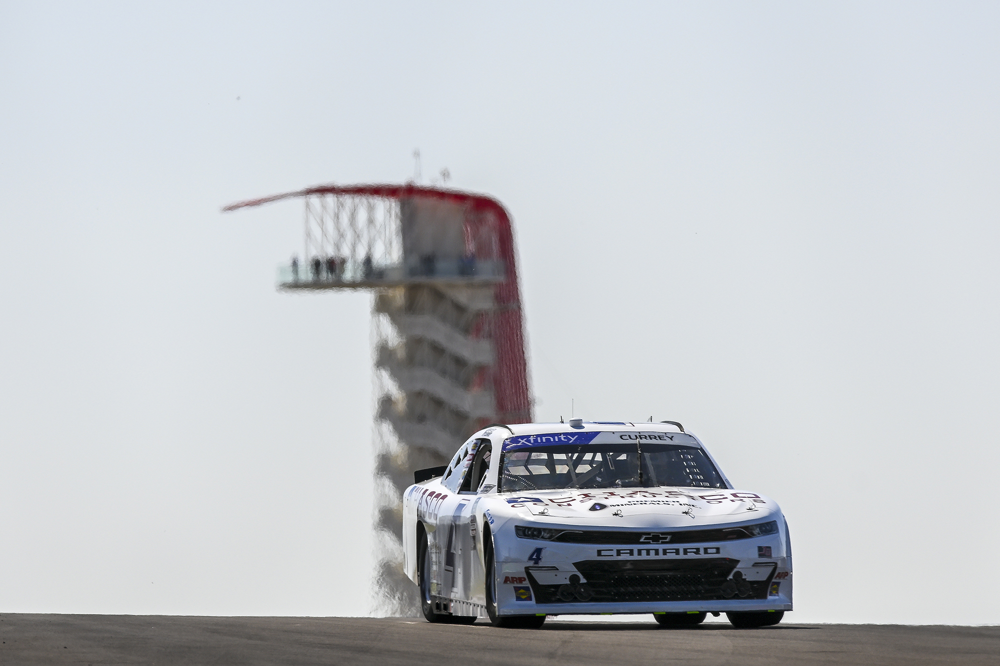
03 / Building momentum
2023
Making every start count
Joins Niece Motorsports for 11 races, with 3 top fives, with a best finish of 4th at Atlanta
2024
Full time in the No. 41
Signed by Niece Motorsports to drive the No. 41 full time for the 2024 season
2025
A breakthrough at Bristol
Partial Truck Series campaign with two top-tens, a first career stage win at Bristol and another fourth-place finish at Atlanta
2026
The next chapter
Joins TRICON Garage as Truck Chief on the championship-contending No. 1 Tundra, and returns to the seat in the No. 5 at Bristol and Charlotte
Gallery
On Track
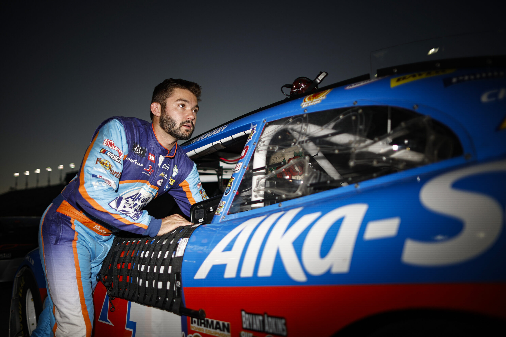
Alka-Seltzer throwback — No. 4
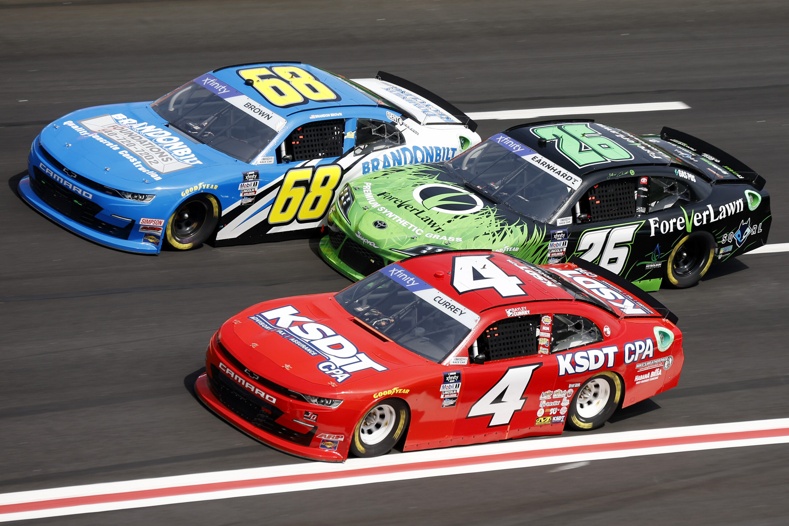
No. 4 KSDT CPA — Charlotte
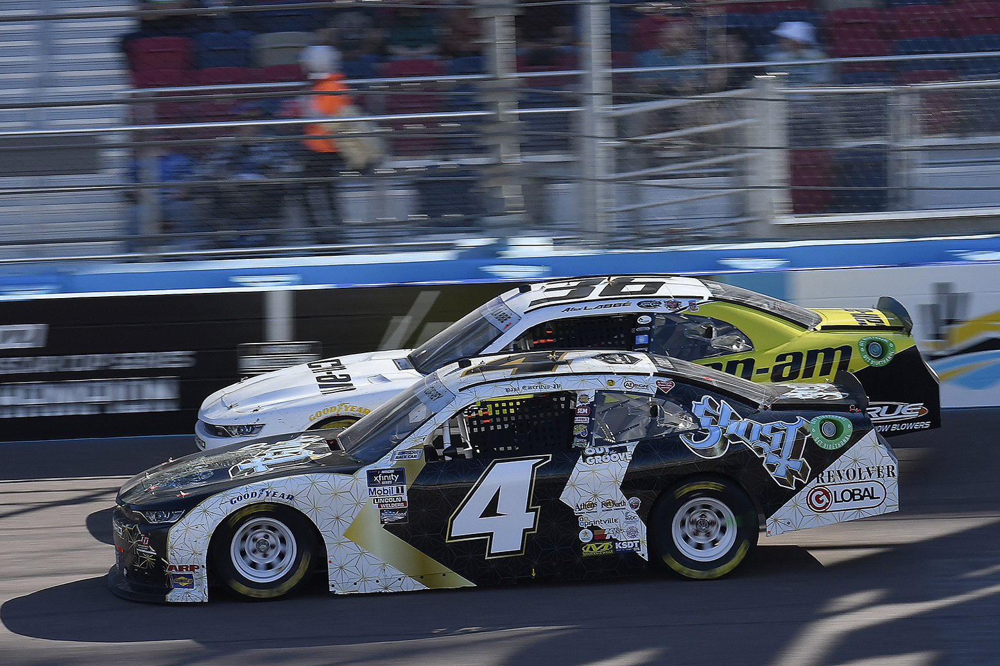
Ghost No. 4 — side by side at PhoenixNo. 41 — Truck Series at DaytonaNo. 44 — Bristol Motor Speedway
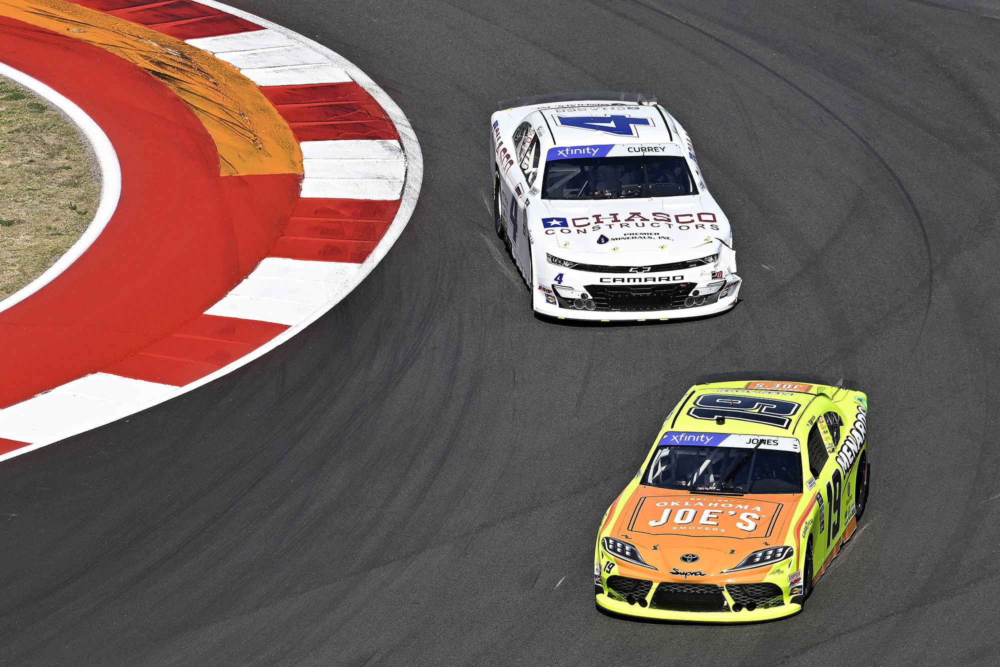
Chasco No. 4 — COTA road courseChasco No. 4 — Circuit of the Americas
Bayley’s home in the NASCAR Craftsman Truck Series. Based in Mooresville, North Carolina, TRICON develops the next generation of racing talent with Toyota Racing Development.
The team behind the No. 5 Shark Attack livery. Monster Truck Wars brings big-truck racing and freestyle entertainment to families across the United States and Canada.